Optics
Copy the decal's URL, select a decal in Sprocket Tank Design, and paste the link into the URL field.
-
black circle
https://sprockettools.github.io/img/black_circle.png
Uploaded by: thecrusade_er
Tags: infrared, black, optics
- 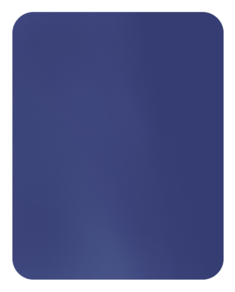
blue optic 1
https://sprockettools.github.io/img/blue_optic_1.png
Uploaded by: gigachad7533
Tags: optic, sight
-
blue square
https://sprockettools.github.io/img/blue_square.png
Uploaded by: thewonderwaffle
Tags: infared, optics, uv, microwave
- 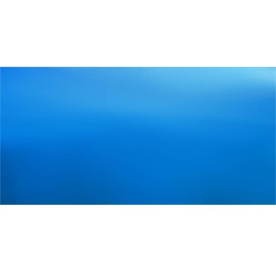
bright blue periscope
https://sprockettools.github.io/img/bright_blue_periscope.png
Uploaded by: theconeezeanemperor
Tags: blue, periscope, sight
- 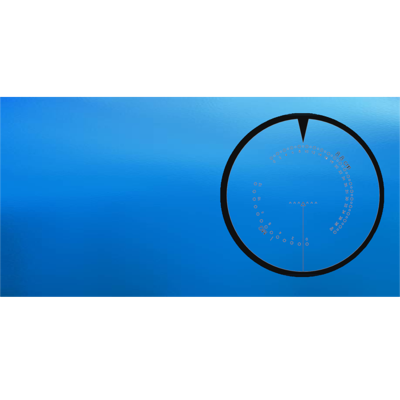
bright blue periscope turmzielfe
https://sprockettools.github.io/img/bright_blue_periscope_turmzielfe.png
Uploaded by: theconeezeanemperor
Tags: german blue periscope tz9 sight
- 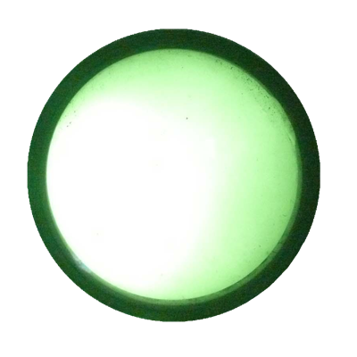
bright green optic ir sight
https://sprockettools.github.io/img/bright_green_opticir_sight.png
Uploaded by: theconeezeanemperor
Tags: ir green
- 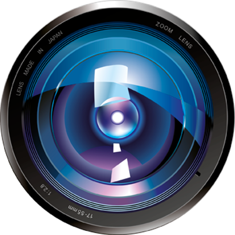
camera optic
https://sprockettools.github.io/img/camera_optic.png
Uploaded by: gigachad7533
Tags: camera, lens, optic
- 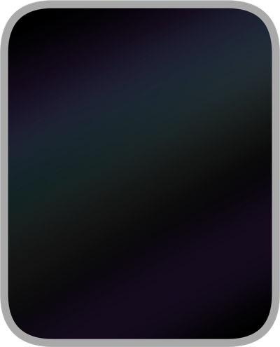
clear optic 1
https://sprockettools.github.io/img/clear_optic_1.png
Uploaded by: gigachad7533
Tags: optic, sight
- 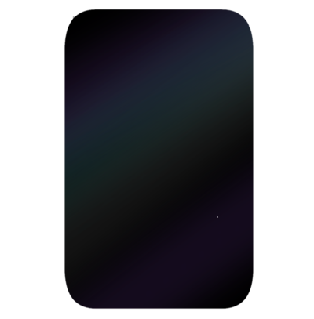
clear optic 2
https://sprockettools.github.io/img/clear_optic_2.png
Uploaded by: gigachad7533
Tags: optic, sight
- 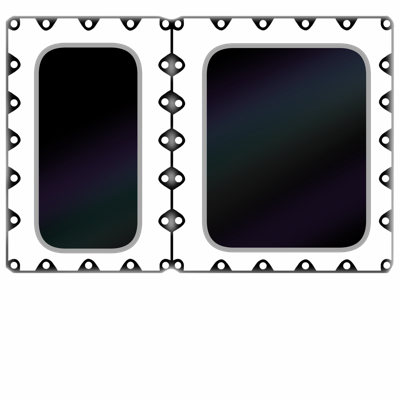
clear optic 3
https://sprockettools.github.io/img/clear_optic_3.png
Uploaded by: gigachad7533
Tags: optic, sight
- 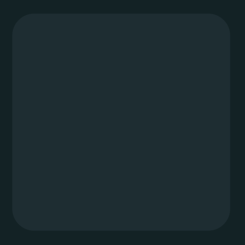
dark green square
https://sprockettools.github.io/img/dark_green_square.png
Uploaded by: thewonderwaffle
Tags: infared, optics, uv, microwave
-
green square
https://sprockettools.github.io/img/green_square.png
Uploaded by: thewonderwaffle
Tags: infared, optics, uv, microwave
- 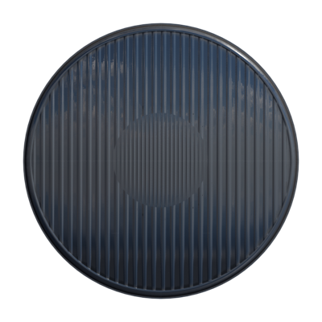
headlamp
https://sprockettools.github.io/img/headlamp.png
Uploaded by: darioxn
Tags: headlamp, light
- 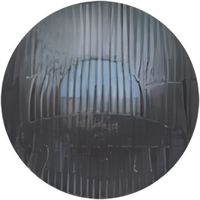
headlight glass
https://sprockettools.github.io/img/headlight_glass.png
Uploaded by: thewonderwaffle
Tags: headlight, drive, light
- 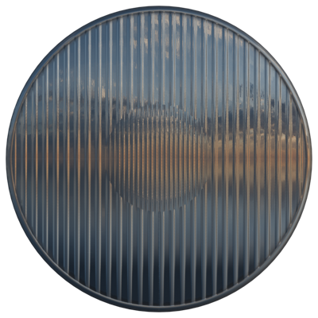
headlight lens
https://sprockettools.github.io/img/headlightlens.png
Uploaded by: darioxn
Tags: light, lamp
- 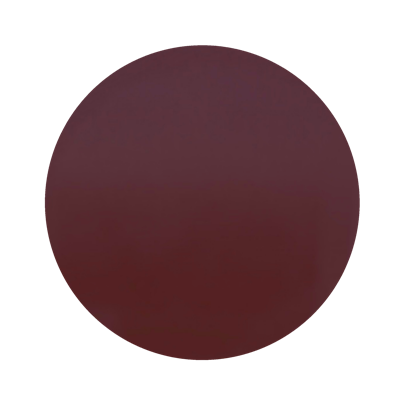
infared lamp
https://sprockettools.github.io/img/infared_lamp.png
Uploaded by: thewonderwaffle
Tags: ir, light, lamp
- 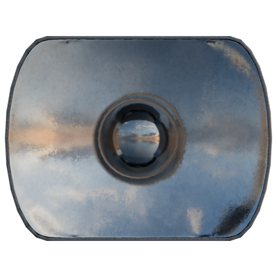
large spotlight
https://sprockettools.github.io/img/largespotlight.png
Uploaded by: darioxn
Tags: light, lamp
- 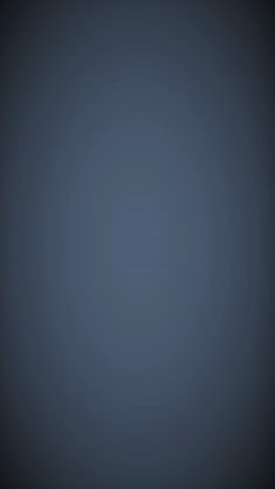
periscope
https://sprockettools.github.io/img/periscope.png
Uploaded by: zeappelman
Tags: optic, periscoper, glass
- 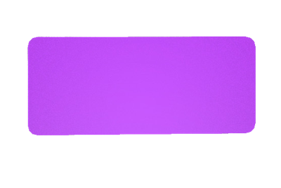
purple sight
https://sprockettools.github.io/img/purple_sight.png
Uploaded by: gigachad7533
Tags: optic, sight

red circle
https://sprockettools.github.io/img/red_circle.png
Uploaded by: thewonderwaffle
Tags: infared, optics, uv, microwave
- 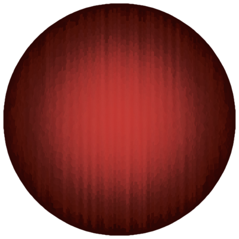
red lamp
https://sprockettools.github.io/img/red_lamp.png
Uploaded by: thewonderwaffle
Tags: red, light, lamp
- 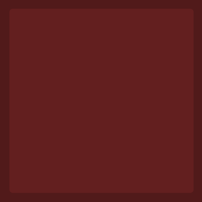
red square
https://sprockettools.github.io/img/red_square.png
Uploaded by: thewonderwaffle
Tags: infared, optics, uv, microwave
- 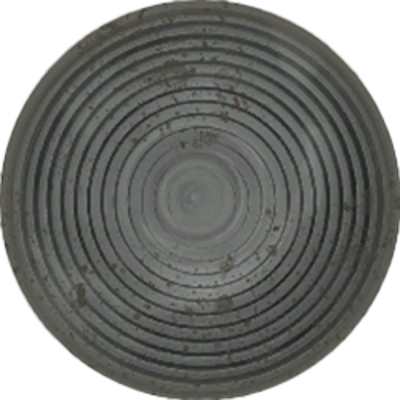
roundlight1
https://sprockettools.github.io/img/roundlight1.png
Uploaded by: nathanthedummy
Tags: functional, headlight, light
- 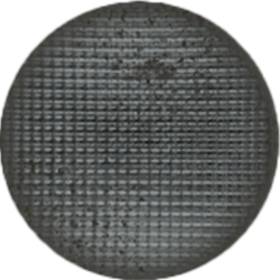
roundlight2
https://sprockettools.github.io/img/roundlight2.png
Uploaded by: nathanthedummy
Tags: functional, headlight, light
- 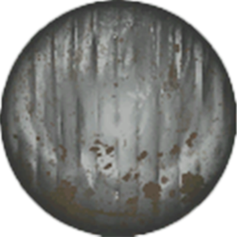
roundlight3
https://sprockettools.github.io/img/roundlight3.png
Uploaded by: nathanthedummy
Tags: functional, headlight, light
- 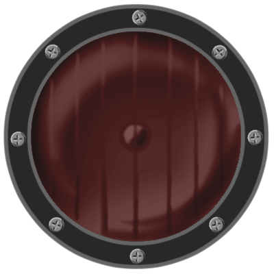
roundtaillight
https://sprockettools.github.io/img/roundtaillight.png
Uploaded by: nathanthedummy
Tags: tail light, light decal
- 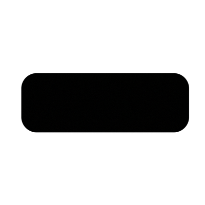
soviet vision slot
https://sprockettools.github.io/img/soviet_vision_slot.png
Uploaded by: thewonderwaffle
Tags: vision, port, slot
- 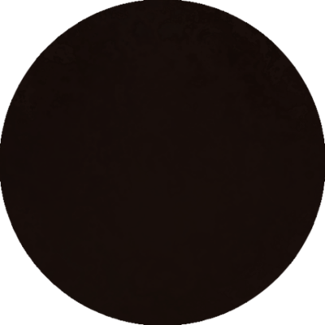
spotlight dark
https://sprockettools.github.io/img/spotlight_dark.png
Uploaded by: terrafinee
Tags: spotlight, dark, ir

turmzielfernrohr 9
https://sprockettools.github.io/img/turmzielfernrohr_9.png
Uploaded by: theconeezeanemperor
Tags: german, sight, tz9
- 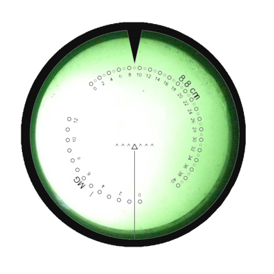
turmzielfernrohr 9 ir
https://sprockettools.github.io/img/turmzielfernrohr_9_ir.png
Uploaded by: theconeezeanemperor
Tags: german sight tz9 ir green
-
viewport
https://sprockettools.github.io/img/viewport.png
Uploaded by: terrafinee
Tags: viewport
 Home
Gear Calculator
Contests
Random Tank Picker
Guides
Credits
Get Trolled
Decal Catalog
RGB Decal Maker
Home
Gear Calculator
Contests
Random Tank Picker
Guides
Credits
Get Trolled
Decal Catalog
RGB Decal Maker